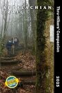

to view it full size
Welcome! After more than 20 years, this page continues to provide one of the most easily accessed AT maps on the web: the official National Park Service strip map for the trail, scanned and split into images that can be viewed in any browser. Simply click on one of the sections to see more detail!
This page first appeared in 1998, when I built, for a friend who is a through hiker, what must have been one of the first hiking blogs on the web. You can still see it here: Fox on the Trail.
Other Online AT Maps
Appalachian Trail Conservancy
Click the green “Launch Interactive Map” button to see the entire trail on a single map. You can zoom, scroll, and activate layers that show several different kinds of information.
National Park Service PDF
Scroll down and click on the words “Click to view full map” to see a PDF version of the same strip map shown here.
Related Hiking Books
Appalachian Trail Data Book (2025)
The bible for serious AT hikers. Provides tables of distances along the trail between landmarks, shelters, and roads.
Thru-Hikers' Companion (2025)
Maps, mileages, and services along the Trail condensed from the individual Guide Books for each state to make high-level planning more affordable.
Ultralight Backpackin' Tips
While the old books written by lightweight backpacking pioneer Ray Jardine seem to be out of print, this guide by Mike Clelland explains how to head out safely and comfortably while carrying less gear.
Printed maps
New Hampshire

Massachusetts
Connecticut
New York
New Jersey

Maryland
Virginia


North Carolina
Georgia